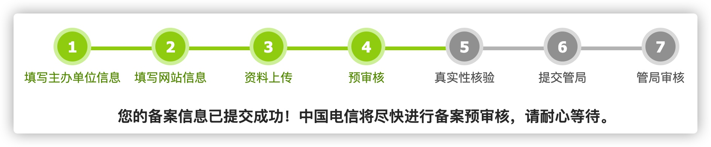

努力了三个月的总结
今年是个灾难年，疫情让大家都不是太好受，但是年初的疫情期间，我想一定有很多人抓住了这段空闲时期努力学习，而这些人一般都是一些比别人更加优秀的人，这几个月他们再次拉开了和我的距离，而我到了8月中旬的夏休长假后才意识到这一点，此时此刻距离我30岁还剩1个月。
第一次落实到笔纸上的执行计划
第一次的计划起于我的夏休，夏休期间因为电脑更换了新配置，旧件废物利用做家庭服务器，研究多个NAS操作系统和软路由，在不断的失败中了解了好多操作系统都是基于Linux，再加上公司最近的项目都是在Linux中开发，觉得熟练Linux命令行对今后的作业有一定的帮助，在NAS草草的选择了WINDOWS之后有了这一路线。
- centOS
- git
- 开发环境（原设想windows开发，通过CLI让Linux服务器同步代码编译并发布）
- angular
- postgreSQL
- dotnet core
- ngnix
- docker
- 软路由
想法初衷
整体目标是通过工作中应用的语言和技术来实现一个blog，然后将我的软件硬件爬坑的经历给记录下来，123三点进行开发环境学习，4为前端，56是DB和后端api，789是部署服务器相关内容。
整个流程走下来应该可以将我想要的博客搭建起来，今后更好的记录未来工作中遇到的问题，便于回顾，而开发过程中也是一个学习的过程，毕竟在项目中没有完全一个人从无到有的实施。
实施结果
经过两个月的学习做一个小总结，以下都是垃圾：
centOS学习了一些基本指令，什么文件处理啊权限用户处理啊，这些简单的能用的到的，跟了一波视频，自己也做了一些笔记。
git和开发环境，嗯设想的并没有去实现，感觉怪怪得，明明docker就是为了多平台，打个镜像就完事了我干啥做这么奇葩，所以最后熟悉了下git的一些常用命令行，从此脱离vsCode的图形化界面操作。
关于angular，不得不说还真是有一些提高，尤其是在路由（包括后期部署的坑）这一块，还真是有了一定的提高，再就是结构指令，真正的不是纸上谈兵真正的动手操作了一番。前端这一部分最耽误时间的应该就是在选择一个富文本编辑器，最后应用的是tinymce，不用额外的资源文件，也比较美观功能齐全。
后端因为一直不是我的侧重点，仅仅是为了API的实现浅浅的完成了前端的需求，不过在tinymce图片文件交互这里也稍微下了一点功夫。
最后的部署环境首先是在IIS中完成了前后端部署，毕竟电脑还是都是windows的，然后docker也是撸了一遍视频，简单的完成了部署。
公网IP也申请了，还傻傻的去备案了，至今还是下面这个状态

以上灰色部分都是垃圾！
到此为止，我总结下我的状态，我发现我没留下什么，除了github上多了几行代码电脑多了几个软件安装包之外，我觉得我一无所获，于是就在次沉浸在迷茫之中。我为什么就无法提升，我也没有在闲着，而且效率明显比之前提高了，学习时间也增加了，我的未来呢。
奇遇➡️心得
好在我迷茫但是没有堕落，有一天在学习浏览器原理时，看到别人博客的引用文献中除了一些书和别人的博文，还有一些课程，而这个课程的介绍就有意思了。
前端学习是一条先块后慢的曲线。在快速入门之后，大多数人都会感觉：自己仅仅停留在会用的阶段，后面的学习之路似乎越来越陡峭，每前进一步都十分艰难。
其实是你没有意识到，你在自学的过程中走了太多弯路。
后面还有一些，我觉得这些完全说到了我的心坎，还是有大牛懂得菜鸟的心的，而其课程目录正含有我在自学的浏览器原理，我觉得我碰到知己了啊，赶紧买过来课啃，上下班一起啃。
这样坚持了大概～～好吧6天，我成功服输了。就有种刚接触人工智能AI，人家提了一个名词我去查，最后一直查到了高中数学，而且这知识早就忘了。
好在赶上了这个老师的直播，这个课程原来是面向阿里P5P6水平如何上P7的一个指导，通过他的直播我确切的找到了差距，要知道这些大牛也不过30到35左右，甚至可能是我同届的毕业生，我八年的对日经验真的是提前养老了，而脑子也养老了，但是我真的不愿意这样认输，我唯一的目标就是不希望到我40岁的时候活得跟周围这些40岁老大哥一样，满嘴都是没法学习的借口。
带着迷茫悲哀和不服的心态继续浏览着知乎，JavaScript入门的5条建议救世的贴出现了，这个贴发写于2017年。我总结下对我最有用的亮点：
- 写代码 > 看视频 > 看书 三个部分时间配比
- 不可盲目追新技术
第一点新鸟老鸟都懂，但是我经常看视频简单就不动手了，讲的东西我知道我会，但是落实到键盘上发现就总也写不对。
第二点他的描述很有趣：
react，vue，angular,和你没关系
node，express，koa，和你没关系
grunt，gulp，webpack，和你没关系
这确实是我的问题，做dotnet出身，因typescript后端程序员很容易接纳，而基本上没有什么基础直接开始了angularJs到angular的开发，html样式能做，然而说不清楚，一切都靠搜索大家记录的bug来辅助我完成工作，真的做到了老师说的会用而已，而跟不上老师的课原因就是没有基础，一个曾经让我们看不起的前端程序员所需要的基础知识梁是我根本不了解的。虽然心理上不接受，但是不得不说，我这八年工作经验可能赶不上大厂p4的新手。
以上心理活动和经历再加上睡觉，大概经历了18个小时，之后我重新操起了《JavaScript权威指南》，一本传说中最不适合初学者学习的书，而恰巧，这本书上次读到了类型转换。对象类型的转换也就是装箱拆箱这一块，读完了也理解了老师当时讲的拆箱转换 valueOf() 方法和 toString() 方法的执行顺序，而这时我发现，原来像听了天书的一节课程，我竟然用读《JavaScript权威指南》不到两个小时就全部消化了。
内心汹涌澎湃，至此我觉得我得到的不仅仅是一课的知识，还得到的是对这个学习方向的肯定，找到了能前进一步的路线。
直播其他所得
winter老师直播的主要围绕是面试，而今年我也仅仅参加了一次面试，这一次就让我知道了差距，那总结老师所说的案例性问题：
- css布局
- dom api
- 原型
- 闭包
后两个问题对日至今也没有被问过，通过这次直播也找到了原因。
考原型闭包是为了考架构能力
原型是考面向对象
考闭包是为了考函数式编程
所以对日外包真的是并不需要呢。
最新计划
- 《JavaScript权威指南》
- 《JavaScript函数式编程》
- 《重学前端》--JS部分
- css布局
- 浏览器原理及API
新的计划很简单，抓好基础，不甘堕落。争取明年七月完成这些目标。
今年的最后总结
这三个月也是今年最后的三个月了，那也就基本是今年的总结了，也是我开始真的努力坚持写博客的第一次总结。
今年上半年虽然没学习技术，好在磨练了下心性，读书是人类走向心智成熟的最佳捷径。在上半年中除了名人传记金融和技术相关方面的书之外，我觉得心理上的书最让我受益匪浅，这里不仅仅是类似《论语》的《人性的弱点》这类书，只讲表象，《少有人走的路》这一套书从心理上讲解了我们一些人性上的弱点的起因以及自己努力掩盖这些弱点的行为，而起初发现这本书只是我想寻求一些在自律上的帮助，却获得了更大的回报，真的是太幸运了。今年读书让我得到的最大最受用的两大改变：
- 控制焦躁的心，可以做到不争吵并且坚决拒绝否定别人。
- 正式面对自己的善恶和伪善，不以恶小而为之，不以善小而不为。
在不断的读书和知识的学习中，我的谈吐也在发生改变，无论跟同事朋友还是亲人，说话越来越调理清晰了。
我是个喜欢完善环境的人，开发环境我会去找各种各样的插件来辅助编程，这次的学习环境也有了很大的投入，买了两份前端课程，买了一个英语外教课程，买了一个苹果一体机，买了一个新pad，买了niz键盘，买了妙控板。嗯这些都花在了11月底12月初，也就是说我有了个明确的目标，我希望到我31岁的时候就能获得丰厚的30岁进行自我投资的知识回报，并在不久的将来进行变现。